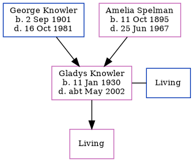

Gladys Kathleen M Spelman (née Knowler) 1930 - c2002
[ Home ] | [ Calendar ] | [ Surnames Index ] | [ Family History ]The daughter of George Knowler (a farm horseman) and Amelia SpelmanGladys Knowler, the second cousin once-removed on the mother's side of Nigel Horne, was born in Thanet, Kent, England on Jan 11, 19301,2 and married Herbert Spelman (with whom she had 1 child, Christina, ) in Dover, Kent, England around Aug 19513.
She died in Thanet c. May 20022.
Parents
- George Thomas was born on Sep 2, 1901
- Amelia Winifred was born on Oct 11, 1895
Citations
- England & Wales births 1837-2006 - Findmypast
- England & Wales deaths 1837-2007 - Findmypast
- England & Wales Marriages 1837-2005 - Findmypast
Media
England & Wales deaths 1837-2007 - BMD/D/2002/5/85220275
England & Wales marriages 1837-2005 - BMD/M/1951/3/AO/000959/002
Family Tree
Generated by ged2site. Last updated on Nov 13, 2024